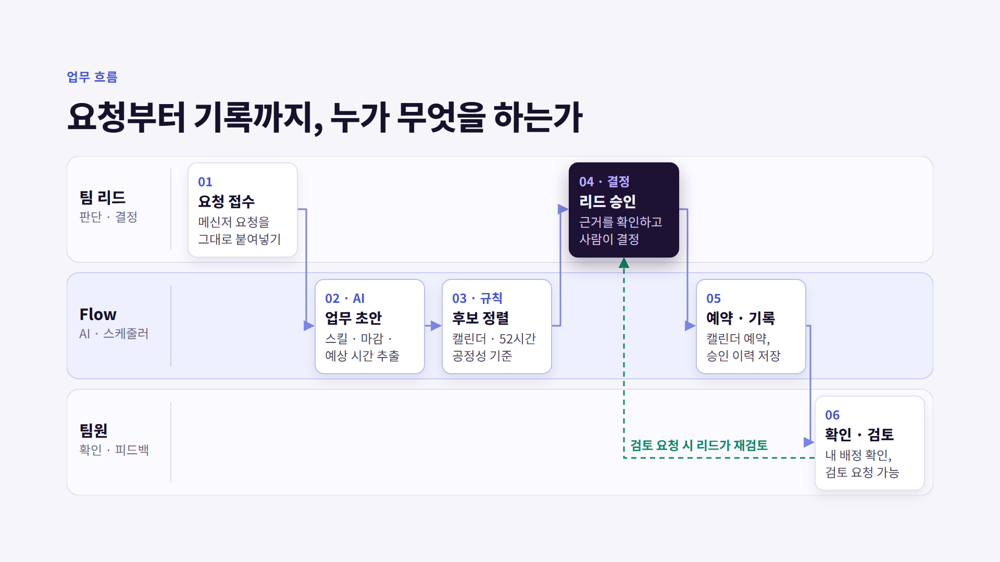
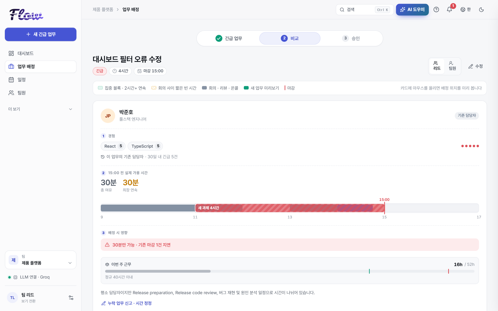
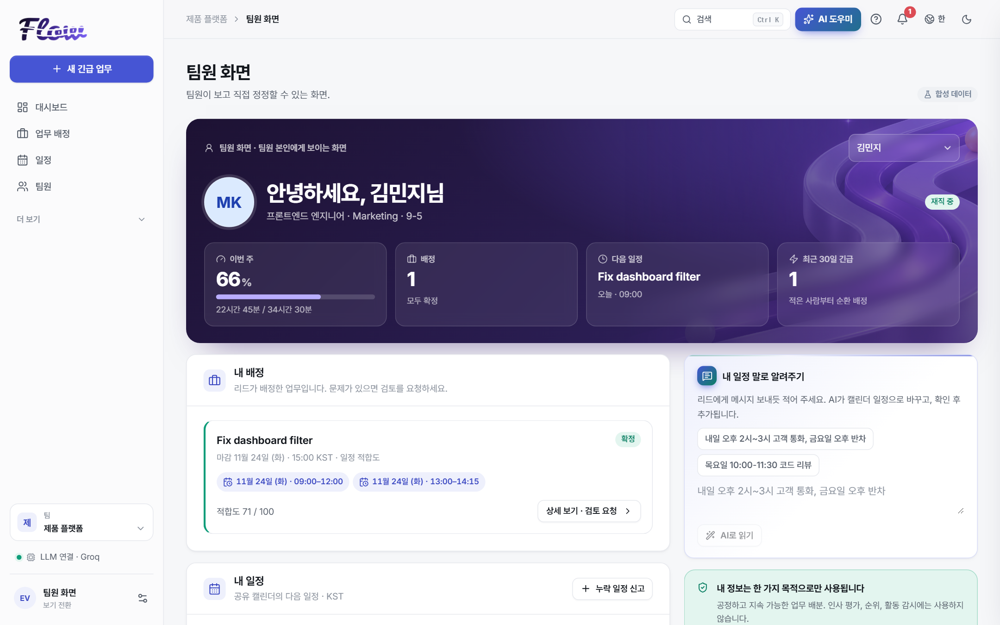

01해결하고 싶은 문제
급한 일은 늘 먼저 응답한 사람, 이전 담당자에게 몰립니다. 그 사람이 한 시간밖에 여유가 없어도요.
기억에 의존한 배정“이거 잘하는 사람”에게 다시 맡깁니다. 스킬이 확인된 다른 팀원은 보이지 않습니다.
캘린더는 나중에 확인회의와 기존 업무로 조각난 일정 위에 4시간짜리 일이 얹히고, 마감 직전에야 문제를 알게 됩니다.
공정성은 기록되지 않음누가 최근 30일 동안 긴급 업무를 몇 건 맡았는지 아무도 모릅니다. 부담이 한두 명에게 반복됩니다.
법과 신뢰의 문제주 52시간 근무제와 개인정보보호법을 지키면서, 팀원이 납득할 수 있는 근거가 필요합니다.
데모 데이터에서도 한 명이 30일간 긴급 업무 5건을 맡고 있으며, 팀 공정성 지수는 53 / 100입니다.
03업무 흐름
팀 리드, Flow(AI · 스케줄러), 팀원 세 주체가 여섯 단계로 움직입니다. 결정 단계(04)는 반드시 사람이 수행하며, 팀원의 검토 요청은 다시 리드에게 돌아갑니다.

그림 1. 요청 접수부터 확인·검토까지의 업무 흐름
04주요 기능
① 긴급 업무 요청 → AI 초안
메신저 요청을 그대로 붙여넣으면 업무 초안이 만들어집니다. 모호한 부분은 질문으로 남기고, 리드가 모든 항목을 직접 고칠 수 있습니다. API 키가 없거나 서버가 꺼져 있어도 규칙 기반 파서로 전체 흐름이 동작합니다.
 그림 2. “대시보드 필터 오류 수정” 요청의 초안: 긴급, 마감 11월 24일 15:00, 180–240분, React·TypeScript L4 이상
그림 2. “대시보드 필터 오류 수정” 요청의 초안: 긴급, 마감 11월 24일 15:00, 180–240분, React·TypeScript L4 이상
② 후보 비교
후보마다 스킬, 마감 전 실제 가용 시간, 새 업무가 들어갈 캘린더 위치, 기존 마감 영향, 이번 주 근무 시간(40시간 · 52시간 기준선)을 보여줍니다. 결정 바에서 선택한 후보의 완료 시각과 여유 시간을 확인하고 승인합니다.

그림 3. 후보를 선택하면 4시간 업무가 들어갈 위치와 마감 전 여유 부족 경고가 표시됩니다
③ 승인 → 캘린더 예약
승인하면 작업 블록이 팀 캘린더에 예약되고 승인 이력이 남습니다. 두 번 클릭해도 중복 예약되지 않으며, 저장 직전에 최신 캘린더로 다시 확인합니다.
 그림 4. 김민지 님에게 기존 일정을 피해 두 개의 작업 블록이 예약되었습니다
그림 4. 김민지 님에게 기존 일정을 피해 두 개의 작업 블록이 예약되었습니다
④ 팀원 화면
배정받는 팀원도 같은 근거를 봅니다. 이번 주 근무량, 내 배정과 그 이유, 날짜별 일정을 확인하고, 문제가 있으면 바로 검토를 요청합니다. “내 일정 말로 알려주기”로 누락된 일정을 메시지로 추가할 수 있습니다.

그림 5. 팀원 화면: 이번 주 66%, 배정 1건, 다음 일정, 최근 30일 긴급 1건
⑤ 내 데이터 (개인정보 열람·정정)
Flow가 보유한 본인 정보 전체와 사용 목적, 출처를 표로 공개하고, 스킬과 근무 시간은 본인이 직접 정정합니다. JSON으로 내려받을 수 있습니다.
 그림 6. 항목 · 값 · 사용 목적 · 출처를 보여주는 내 데이터 표
그림 6. 항목 · 값 · 사용 목적 · 출처를 보여주는 내 데이터 표
⑥ 운영 도구
대시보드공정성 지수, 향후 5일 팀 가용 시간 히트맵, 긴급 업무 부담, 오늘의 일정 충돌 지점
리포트팀원별 이번 주 업무량과, 이전 담당자 우선 방식과 비교하는 배정 시뮬레이션
일정 점검일정 중복, 마감 임박, 스킬 보유자 부족을 미리 찾아내는 지속 모니터링
배정 내역모든 배정의 승인·검토·재배정 기록, CSV 및 캘린더 파일 내보내기
07실행 방법
npm install
cp .env.example .env # GROQ_API_KEY, SUPABASE_URL 등 입력 (선택)
npm run dev # 웹 http://127.0.0.1:5173 · API :3001
npm test # 단위 테스트
키를 입력하지 않아도 브라우저 저장과 규칙 기반 파서로 전체 흐름을 시연할 수 있습니다. 대시보드의 “4시간 긴급 데모 실행” 버튼으로 바로 시작합니다.
08검토 반영 및 향후 계획
제품 디자이너, UX 리서처, HR 테크 자문, 엔터프라이즈 SaaS 전략가 네 관점의 모의 검토를 거쳐 결정 중심 비교 화면, 52시간 근무 미터, 개인정보보호법 원칙 표시, 랜딩 페이지 개선을 반영했습니다.
- 승인 후 10초 되돌리기
- 카카오워크 · 네이버웍스 · Slack 연동: 요청과 승인을 메신저 안에서
- 리드·팀원 로그인과 권한별 화면
- Google Calendar · Jira · GitHub 실제 연동 (현재는 문서화된 정적 엔드포인트)